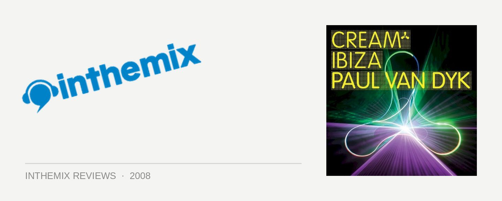

Various Artists - Cream Ibiza 2008, mixed by Paul van Dyk
For those of us who love our dance music in all the different shapes that it takes, we’ve witnessed a special evolution recently from two of the world’s most influential and enduring DJs. With the two of them sporting nearly 20 years experience behind the decks and for most of that time, known for their support of a certain style of club music, they’ve recently shifted their focus towards bringing a selection of other musical styles into the mix. It’s a reflection of the genuine passion and excitement they both still feel for the new tunes they’re hearing every day; the first is Carl Cox with his beloved bangin’ techno, and the second of course is Paul van Dyk, who’s played a pivotal role in the trance scene since the early days. And here, the latter shows his stripes with his first mix compilation in three years Cream Ibiza; it’s a reflection of the diverse sounds we’ll be hearing in his sets this season.
There are two discs on offer here, and it’s the first that demonstrates just how much PVD has broadened his sound in recent times. It’s also the disc that’ll probably get the trance fanboys the most wound up; for the rest of us though, it’s the sort delicious treat that needs to be savored, as it’s rare we enjoy a mix that’s as intricately programmed and prepared as this. PVD’s legendary Politics of Dancing releases have showed him looking beyond the format of simply mixing two tracks together, utilising plenty of personal edits and studio trickery to make it all happen. As he’s since adopted the latest technology so he can use that exact same approach in his live DJ sets, you’d assume it’d be that much more pronounced here. And it is. With nearly 30 tracks crammed in there, things move at a breakneck speed and there’s some elaborate studio layering going on. You’ll wish that every DJ put this much thought and consideration into their mix compilations.
Kicking off with the deep house of Offdate’s Always Want (yes, you heard that right) before lifting into the soft baeleric sounds of Gap 4, PVD keeps the surprises coming and you literally never know what to expect. The disc roars through a seamless mashup of house, electro, progressive and techno without ever dropping a beat; Angello & Ingrosso, Jon Rundell, Laidback Luke, they all get a thrashing here. You’d tend to think that with all these different sounds mashed in over the course of the 75 minutes it’d be a little disjointed; but somehow, he manages to make it all work. His ‘all are welcome’ approach is inspiring, and it’s A&N Project’s Just When I Think There’s An Answer that best captures the CD’s musical focus. Sporting a grinding electro bassline, the musical layerings that underpin the tune are pure percussive techno; that’s before it bottoms out into a breakdown that’s more Deadmau5-style melodic progressive than anything else. When the beat finally drops again, that devastating bassline also slams back in. Brilliant stuff.
While the first disc has the potential to confuse a few militant trance fans, the second will definitely be more of their cup of tea. Kicking off with the exhilarating chords of Nitrous Oxide’s Waves, he slams straight into Derilict’s Voice of Hope without giving you a moment to collect your thoughts, followed immediately by the sugary anthemic rush of Super 8 & Tab’s Elektra. It’s bangin’ from the word go, and things ain’t slowing down for anybody. The energy levels are kept high throughout with a particularly muscular selection of trance stormers, with PVD taking it to its most soaring, emotional point right smack in the middle with two epic selections from Giuseppe Ottaviani. He toughens it up for the next few tracks before pitching it down for a triple-shot of heart-wrenching, melancholic progressive trance with the back-to-back finale of Kuffdam’ Burn It Up, Alex M.O.R.P.H’s Spirit and PVD’s own amazing remix of Jon O’Bir’s Ways & Means. For all intents and purposes, this is Politics of Dancing mk 3.
Cream Ibiza is PVD’s most ambitious mix compilation yet, and it can boast a level of polish that puts it on par with his Politics of Dancing CDs. More importantly though, it counts as his statement to the dance music world: there’s too much exciting music out there for PVD to ever restrict himself to a single sound, but that doesn’t mean he’s forgotten the glory of a sweeping buildup. Cream Ibiza is a reflection of how dynamic PVD’s approach is, and it’s the sound of a man who’s still inspired by what he’s doing after nearly 20 years in the game. One of the best compilations to hit the shelves this year, and worthy of the PVD legacy.
Check out the tracklisting…
Disc One:
1. Offdate – Always Want
2. Gap4 – Royal Flush
3. Marc Vedo – Fast Track
4. Terranova & Leeds – This Is What You Need
5. Supersub & Bas Thomas feat. Stanford – Get Down (Club Mix)
6. Carnival Junkie – After Dark
7. Dj Simi & Marotta – My House (David Tort Mix), with South Beach – Kid Chris
8. Steve Mulder – Electronik
9. Angello & Ingrosso – 555
10.Dero – i Retro
11.Tattoo Detectives – Il Saltu Fuori (with Funkagenda – What The Fuck)
12.Bob Sinclar pres. Fireball – What I Want (with Solar Sun – Underground Tel Aviv)
13.Solar Sun – Underground Tel Aviv (Sharp & Smoth Back 2 Drums Mix)
14.Dirty South & Paul Harris feat. Rudy – Better Day (TV Rock Remix) (with Lange vs. Gareth Emery – Another You Another Me)
15.A&N Project – Just When I Think There’s An Answer
16.Gareth Wyn & The Viceroy – La Galeria
17.Jon Rundell – Taking Time (with Phunk Investigation vs. Mephisto – State Of Mind (Darkness Mix)
18.Houseplayerz – Hipnotize
19.Dinka – The Temptation
20.EDX – Premiumline
21.Steve Angello & Laidback Luke – Be (Masi & Mello Re-Work Mix) (with R-Tem – Met-R)
22.T-Rek – Fuck House
23.TuneBrothers – Dirty Nasty (Micha Moor Remix) 24.Paul van Dyk feat. Ashley Tomberlin – New York City (Cream Ibiza Nights Mix)
Disc Two
1. Nitrous Oxide – Waves
2. Derelict – Voice of Hope
3. Super8 & Tab – Elektra
4. Technosquirrels – Love Comes First (Styrofoamkid Remix) (with Paul van Dyk – Let Go (PvD Instrumental))
5. David Shaw – Digital Prostitute (Flash Brothers Remix)
6. Tom Colontonio – Xtreme Tactics
7. Majai – Phoria (Elevation Remix)
8. Jose Amnesia – Follow Me (Giuseppe Ottaviani Mix)
9. Giuseppe Ottaviani – No More Alone
10.Paul Webster – Engaged
11.Paul Trainer – Totally
12.Mekk – Resistance
13.Reaves & Ahorn – Shifting Lives (with Robbie Riviera – Back To Zero)
14.Stoneface & Terminal – Pictures
15.DJ Dazzle – Chaos Theory
16.Kaskade & Deadmau5 – Move For Me (Instrumental Mix)
17.Kuffdam – Burn It Up
18.Alex M.O.R.P.H. – Spirit (Dub Mix)
19.Jon O’Bir – Ways & Means (Paul van Dyk Mix)
And check out this footage of PVD getting to work at Cream in Ibiza last year…